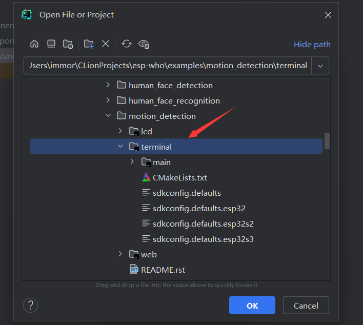
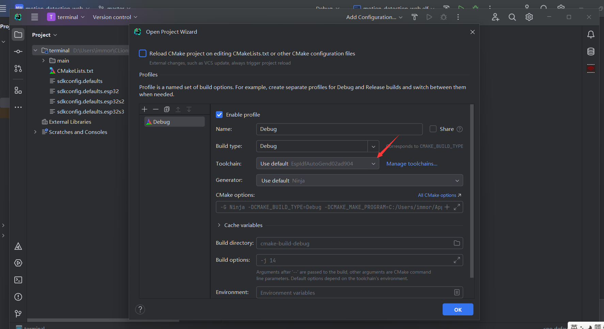
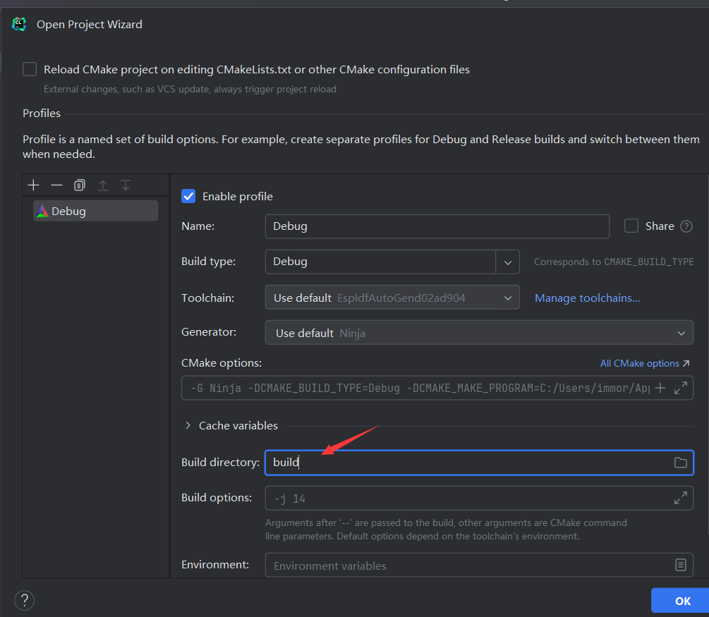
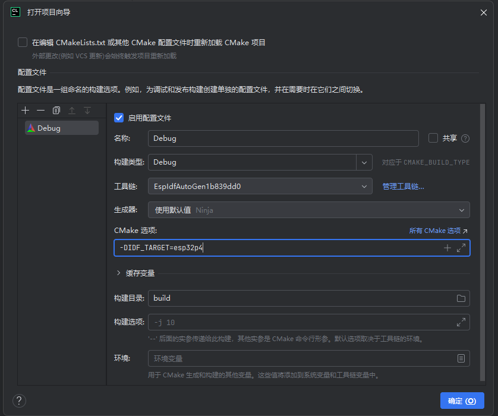

打开IDF项目
为了减少阁下的工作量，打开项目之前，至少成功创建过一次ESP—IDF项目，这样才能使用配好的ESP-IDF ToolChain。
选择需要打开的项目

选择之前生成的ToolChain

选择build目录
建议和idf.py默认保存一致，使用build目录。

设置target
通过profile设置cmake cache变量设置
当打开一个通用项目时候，而sdkconfig/sdkconfig.defaults没有指定CONFIG_IDF_TARGET ，会默认使用esp32, 当然也可以可以打断cmake加载重新设置。
为了省一步操作，在打开项目过程中指定

02 八月 2025